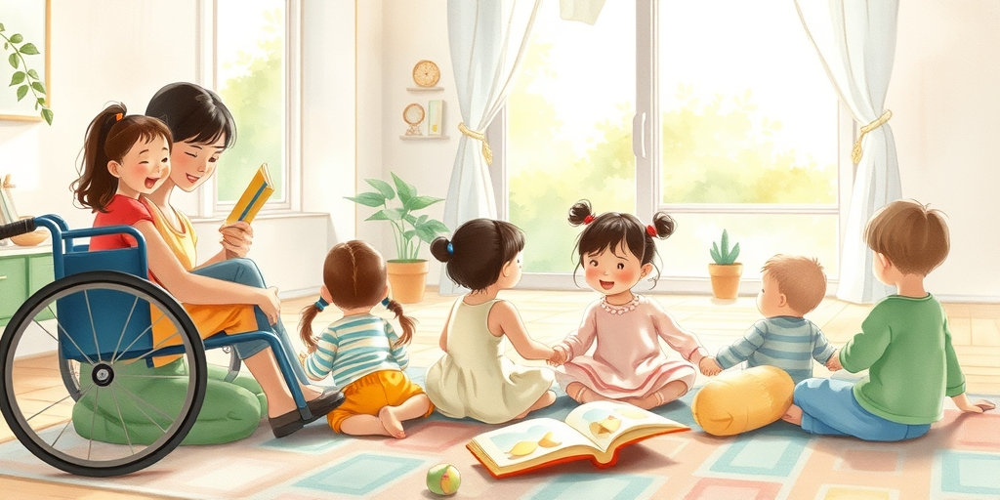
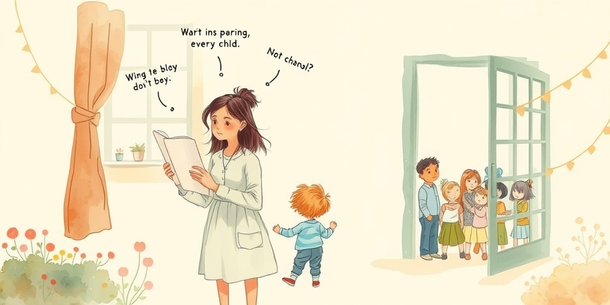
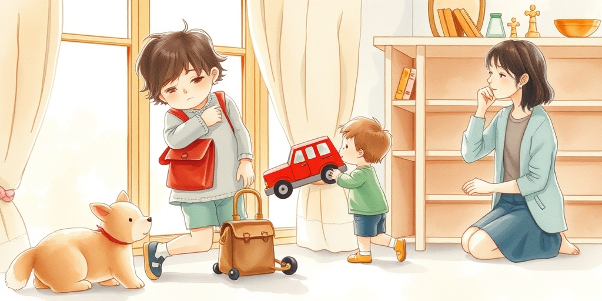
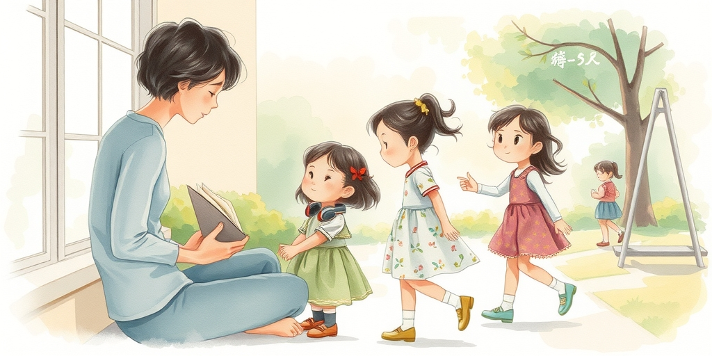

小汪老师的成长洞察 · 属于你的成长专栏
把你的孩子放进一个所有人看起来都差不多的班级，你以为这是保护，其实你可能剥夺了他一生中最重要的学习机会——如何与‘不同’的人相处。

很多家长一听‘融合教育’，第一反应是，我的孩子会不会被拖慢？会不会受影响？这个担忧很自然，但方向完全错了。融合教育的核心受益者，从来都不是那几个特殊孩子，而是你我这样的普通孩子。当一个普通孩子，从小有机会和行动不便的同伴一起上课，和表达方式不同的朋友一起游戏，他的大脑在建立一种极其珍贵的认知地图。他学到的不是‘同情’，而是‘共情’——世界本来就由各式各样的人组成，合作不需要双方完全相同。
俄勒冈州最近庆祝了一个里程碑，他们让大多数残疾幼儿和普通幼儿一起学习。这不仅仅是政策的胜利，更是教育理念的转向。真正的学习发生在差异之间。一个只见过一种颜色的孩子，无法理解色彩的绚烂。同样，一个只在‘正常’环境中长大的孩子，他的社交肌肉和情感弹性，其实是发育不全的。

家长的担忧，往往不是基于事实，而是基于自己内心导演的‘灾难片’。我们害怕自己的孩子被欺负，害怕孩子学到不好的行为，害怕孩子问出尴尬的问题。这些恐惧，本质上是我们对‘未知’和‘失控’的焦虑投射。我们假设自己的孩子是脆弱的瓷器，需要被保护在无菌的环境里。但孩子不是瓷器，他们是野草，有惊人的适应力和学习能力。
研究发现，进入青春期的孩子，焦虑情绪容易上升，而家长的觉察却常常滞后。这说明什么？说明我们容易关注看得见的分数和伤口，却忽略孩子内心正在经历的、关于自我认同和人际关系的剧烈化学反应。与其担心孩子在融合环境中‘受伤’，不如担心他在一个过于单一的环境中，从未获得处理复杂人际关系的‘抗体’。你替他规避的冲突，未来会以更猛烈的形式还给他。

两个孩子争抢同一个玩具，一个孩子急得大哭，另一个孩子不知所措。在纯净的环境里，这种情况可能会被老师迅速调解。但在融合班级里，这个冲突可能会多一层：那个急哭的孩子，可能因为语言发育迟缓，无法用语言表达‘我想要’，只能用行动。而另一个孩子，第一次面对这种无法用常规语言沟通的状况。这恰恰是社交学习最生动的现场。
孩子需要从实践中学习，社交不是背公式。他们需要看到，人与人之间有不同的表达方式、不同的需求、不同的节奏。他需要学习的是，当对方和你‘不一样’时，除了生气和远离，还可以怎么做？是等待，是用手势，是寻求帮助，还是换一种玩法。这种在真实摩擦中长出来的解决问题的能力，比任何一门兴趣班都宝贵。它直接塑造孩子未来的人格底色：是僵化的评判者，还是灵活的合作者。

我们教孩子要‘善良’、‘有爱心’，但这些词太抽象了。真正的善良教育，发生在你把一个具体的、有缺陷的、有困难的同伴，放在你孩子身边的时候。‘爱心’不是一个概念，而是当你的孩子看到同伴写字很慢时，他能自然地等待；当同伴听不懂复杂指令时，他能换一种简单的方式再说一遍。这些具体的、微小的善意，才是品格教育的毛细血管。
就像印度演员瓦伦·达万的父亲所说，孩子的失败会深深刺痛父母。反过来想，当我们的孩子在融合环境中，学会如何对待一个‘不一样’的、可能会‘失败’的同伴时，他也在学习如何对待未来那个可能会‘失败’的自己，以及如何面对未来那个可能会‘失败’的我们。包容，最终是对人类普遍脆弱性的深刻理解。这种理解，无法通过说教获得，只能在真实的共处中滋长。
给家长的小提示
你可能会担心，让孩子接触这些‘不一样’的同学，会不会让他变得‘不一样’？换个角度想，一个懂得如何与‘不同’相处的孩子，他的世界会大得多，他的适应力会强得多，他未来的人生选择也会宽得多。我们总想给孩子一个最好的世界，但或许，我们更应该给他一个如何与真实世界相处的能力。你真的相信，自己的孩子如此脆弱，脆弱到连一个‘不一样’的同学都无法面对吗？
参考资料
[1] Most Oregon toddlers, preschoolers with disabilities now learn alongside non-disabled peers (The Oregonian) https://www.oregonlive.com/education/2026/06/most-oregon-toddlers-preschoolers-with-disabilities-now-learn-alongside-non-disabled-peers.html
[2] Puberty may hide rising anxiety in children as parent awareness lags (Medical Xpress) https://medicalxpress.com/news/2026-05-puberty-anxiety-children-parent-awareness.html
小汪老师的成长洞察 · 属于你的成长专栏